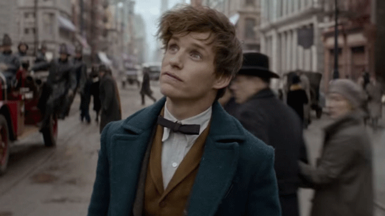
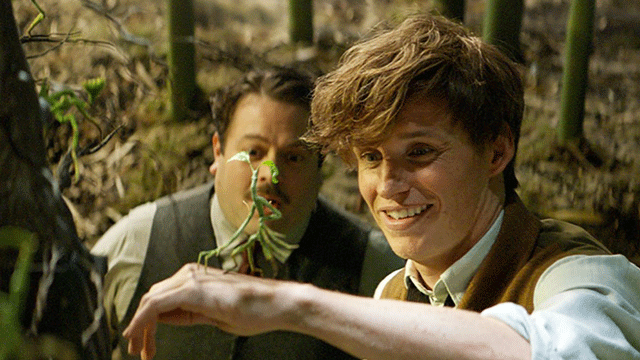
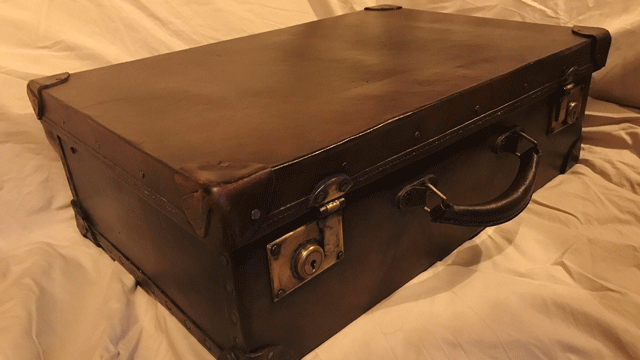
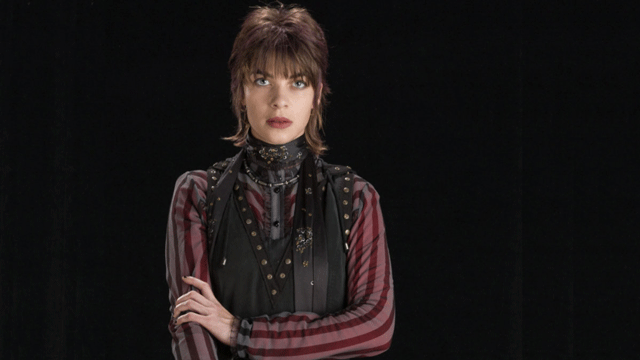
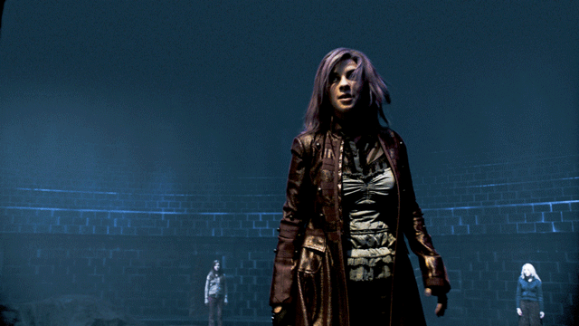
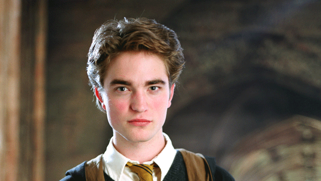
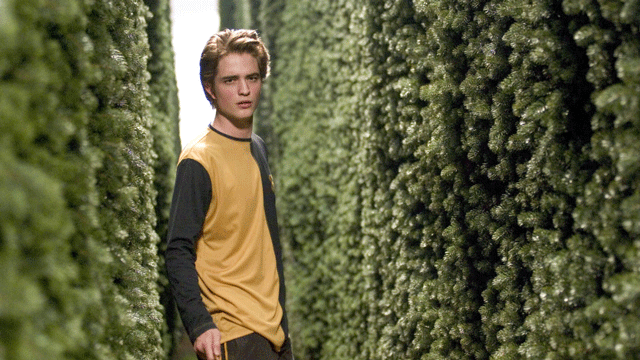

 Newton Artemis Fido "Newt" Scamander, was a famed Magizoologist and author of Fantastic Beasts and Where to Find Them. Early in life, Scamander developed an interest in magical Creatures, influenced by his mother's breeding of hippogriffs. He attended Hogwarts School of Witchcraft and Wizardry, where he was sorted into Hufflepuff House, and was sentenced to expulsion, though Albus Dumbledore protested his innocence.
Scamander joined the Ministry of Magic, spending two years in the Office for House-Elf Relocation before joining the Beast Division. In 1918, he was commissioned by Augustus Worme of Obscurus Books to write Fantastic Beasts and Where to Find Them. The book became a best-seller, making Scamander a respected expert in the field of Magizoology. He married Porpentina Goldstein, and they had at least one son[6]. By the beginning of the 1990s, he was retired and living in Dorset.
His Personality
Scamander was a dedicated individual who tirelessly researched new information for his book Fantastic Beasts and Where to Find Them, even when he was supposedly retired. Considered an authority in the field of Magizoology, his works were respected throughout the wizarding community.[Newton was described as eccentric and felt more comfortable around creatures than he did around humans. He admitted that most people found him annoying.
A man of principle, he was not the sort of man to discriminate against people based on their heritage or beliefs. He was also seen to be courteous with non-magical individuals like Mary Lou Barebone and Jacob Kowalski, the latter of which with whom he formed a close friendship. He was also morally astute, expressing shock and discontent at morbidness and cruelty, such as the idea of using the Obscurus that killed a child for personal gain. Despite this Newt himself admitted that he showed poor judgement in his youth. An example is when he brought his thunderbird to the United States to set him free, let alone an entire suitcase full of magical creatures, given MACUSA's curse-to-kill policy at the time on such creatures.
Magical Abilities and Skills
Care of Magical Creatures:  Newt was interested in Magizoology from a young age and throughout the years, he gained knowledge of a wide variety of creatures from all over the world. He was awarded a famous Wizard Card and an Order of Merlin for services to Magizoology.
Communicating with animals: Newt was shown to have a particular way with animals in a manner most Wizards don't. He possesses an innate ability to communicate and bond with beasts of all shapes, such as Thunderbirds and Bowtruckles — treating the latter much like a parent would a child. He is also capable of using beasts such as the Swooping Evil to aid him in combat, and can control it to a degree, despite it being a relatively dangerous beast.
Charms
Apparition
Dueling
Potions
Histoty Of Magic
Muggle Studies
Nonverbal Magic
Wandlore
Transfiguration
His Suitcase
 A magical suitcase enchanted with an Undetectable Extension Charm in which he held a number of beasts while he travelled. He could hide the contents from Muggles by flipping a switch on the case. In 1926, whilst visiting the United States of America, the beasts in Newt's suitcase escaped, whereupon he was accosted by Percival Graves, a powerful MACUSA Auror and right-hand man of the American wizarding community's leader, Seraphina Picquery. The suitcase contains its own world with many different habitats for each creature. It also contains a place for Newt. Tina takes the suitcase with Newt inside it to MACUSA headquarters where she tells them about the creatures that have escaped.
Nymphadora Tonks
Who Is She?
 Nymphadora Lupin more commonly known as Tonks, occasionally Dora, was a half-blood witch and the only child of Ted and Andromeda Tonks (née Black). She was a Metamorphmagus and attended Hogwarts School of Witchcraft and Wizardry from 1984-1991. She was Sorted into Hufflepuff House and was in the same year at Hogwarts as Gryffindor Charlie Weasley.
After leaving Hogwarts, Tonks joined the Ministry of Magic and trained to become an Auror under the watchful eye of Alastor Moody, qualifying in 1994.
In 1995, Tonks joined the second Order of the Phoenix, working undercover in the Ministry and helping to guard the Department of Mysteries. In June of 1996 she fought in the Battle of the Department of Mysteries and at some point fell in love with Remus Lupin. Remus (a werewolf) felt he was too poor, old, and dangerous for her and thus rejected her feelings, although he felt the same way. In the wake of the return of Lord Voldemort, Tonks was assigned to Hogsmeade as part of the Auror task force sent to guard Hogwarts. Tonks later fought in the Battle of the Astronomy Tower and, after seeing the love Fleur Delacour held for Bill Weasley despite his injuries, publicly declared her love for Remus.
Tonks and Remus were married in the summer of 1997. She became pregnant shortly after and Remus began to worry that he had passed on his werewolf condition to his son, though this proved not to be the case (Teddy inherited his mother's metamorphic abilities). Remus in response to this attempted to leave Tonks, but was convinced by Harry Potter to return to her. She gave birth to a son, Teddy Remus Lupin (named after her late father Edward Tonks) shortly after Easter in 1998 and the couple named Harry the godfather.
On 2 May, 1998 Tonks fought in the Battle of Hogwarts and was murdered by Bellatrix Lestrange. Bellatrix was her maternal aunt and a Death Eater, a loyal and devoted servant of Lord Voldemort. Tonks' murder was avenged by her order colleague and friend Molly Weasley. After her death her son was raised by her mother and Harry Potter.
Personality and traits
Tonks was enthusiastic, bubbly, and easily able to make friends with people she had just met. She was eager and would often want to help Molly Weasley in the preparation of dinner at Grimmauld Place.
As a Metamorphmagus (Tonks could alter her appearance at will) she was known for using her gift for lighter purposes, such as experimenting with her appearance for entertainment. Despite this, Tonks had difficulty controlling her magical abilities when she was unhappy (such as when her love was rejected by Remus Lupin). She was not good at household spells and was also notoriously clumsy. For example, she smashed a plate in the Dursley's kitchen during their rescue of Harry Potter and knocked over an umbrella stand in Grimmauld Place. Despite her young age, Tonks possessed an incredible will. This is evident when she cast a non-verbal Patronus Charm, which requires a powerfully happy memory, despite being highly miserable at the time.
Tonks was not only an excellent witch, but a staunchly loyal supporter of Albus Dumbledore. In her work for the Order of the Phoenix, she was: brave, dependable and selfless. She repeatedly put her life on the line for the sake of following through with Dumbledore's plans.
Tonks rather disliked her given name and considered her mother as a fool for naming her as such. She insisted to be called "Tonks" instead. She did not express any rejection when others refer her as "Dora", a shortened form of the given name she detested so much. This may haven been because her father, whom she loved called her it.
Magical Abilities and Skills
Auror skills:  Tonks was rather young for an Auror, which spoke for her considerable magical skills. She was the last person to become a fully fledged Auror before Harry Potter was accepted, which when combined with the fact that becoming an Auror required proficiency in the practical application of magic and exceptional marks at school, highlighted her abilities as a witch. Besides this, Tonks's father also noted that she had been in several sticky situations in her time as an Auror, and had always found a way to emerge from them unscathed.
Metamorphmagus: Unlike most other wizards and witches, Tonks possessed the ability to change her physical appearance without the need for a potion or a spell to assist. With simply a thought, Tonks was capable of changing her facial features, nose shape, and even the colour of her hair and eyes. She used this ability both to entertain people and to stop people from recognising her. This rare skill was invaluable for espionage, and she also passed the disguise and concealment portion of her Auror training without any studying.
dueling
Defence Against the Dark Arts
Charms
Potions
Transfiguration
Healing magic
Flying
Detective Abilities
Apparition
Cedric Diggory
Who Is He?
 Cedric Diggory . He started attending Hogwarts School of Witchcraft and Wizardry in 1989, and was sorted into Hufflepuff House. During his time at school he was a prefect and captained the Hufflepuff Quidditch team, playing as Seeker. In his sixth year Cedric put his name forward to compete in the Triwizard Tournament.
He was selected as the Hogwarts Triwizard Champion and, although overshadowed in the press by the entry of Harry Potter, Cedric enjoyed almost overwhelming support from the student body, and after the first two tasks, tied with Harry for first place. Cedric and Harry completed the Third Task together. Both took hold of the Triwizard Cup, which transported them to the Little Hangleton graveyard. In the graveyard, Cedric was murdered by Peter Pettigrew with the Killing Curse, on the order of Lord Voldemort.
During the following duel between Harry and Voldemort, Cedric's echo reappeared during Priori Incantatem, and helped the echoes of Harry's parents, Bertha Jorkins, and Frank Bryce hold off Voldemort long enough for him to escape. His only request was for Harry to take his body back to his parents, which Harry honoured.
Personality and traits
Cedric was said to be an embodiment of the qualities of Hufflepuff House. He had a sense of fair play: during the 1993 Gryffindor/Hufflepuff match, despite his capture of the Golden Snitch (which ensured his team's victory), Cedric immediately offered to replay the match once he found out that his opponent, Harry Potter, had fallen from his broom due to the influence of the Dementors. Later on, he provided Harry with information as to how to decipher the golden egg clue for the Second Task. After Harry saved him in the maze, Cedric realised that Harry was the one who truly deserved to take the Triwizard Cup, and had no qualms with openly acknowledging it, which actually resulted in an argument of sorts between them. This sense of fair play and his ability to accept there were those who were better than him is a definite testament to his nobility and his grace.
He also appeared to possess a strength of character that was not unlike Harry's. This came into play when Fleur's turning the force of her Veela charm on him while asking him to be her date for the Yule Ball. He refused, for he already had a date. Hence, it could be said that Cedric was a man of his word with remarkable inner strength, especially given how he was able to successfully resist the allure of Veela charm (which could be overwhelming) and keep his previously made promise.
Besides all this, Cedric was genuinely modest, telling his father that his victory in the Gryffindor/Hufflepuff Quidditch match had not been a truly fair one. All the female Gryffindor Chasers described him as being "strong and silent", suggesting that he was sensible enough to speak only when it was absolutely necessary. He was also courteously polite to foreigners: though he supported Ireland during the 1994 Quidditch World Cup final, he was still civil to Viktor Krum (who was from Bulgaria). The fact that his spirit's last request to Harry had only been to take his body back to his parents also proved that he loved his parents dearly.
While this side of him was never seen in the original timeline, he appeared to have a sense of honour and importance for his title at the school. This was proved by the fact that in one of the alternate timelines, in which he was humiliated during the Triwizard Tournament, this feeling of embarrassment eventually led him to join the Death Eaters. This means that if his pride or status was to ever been shot down enough, this feeling of anger would have turned him over to the Death Eaters.
Magical abilities and skills
 Given how Cedric was capable of participating in the Triwizard Tournament, it can be deduced that he was a skilful and competent wizard in his own right. Even Barty Crouch Jr acknowledging him as a talented wizard. He was also an accomplished Quidditch player.
 Tonks was enthusiastic, bubbly, and easily able to make friends with people she had just met. She was eager and would often want to help Molly Weasley in the preparation of dinner at Grimmauld Place.
Tonks was enthusiastic, bubbly, and easily able to make friends with people she had just met. She was eager and would often want to help Molly Weasley in the preparation of dinner at Grimmauld Place.